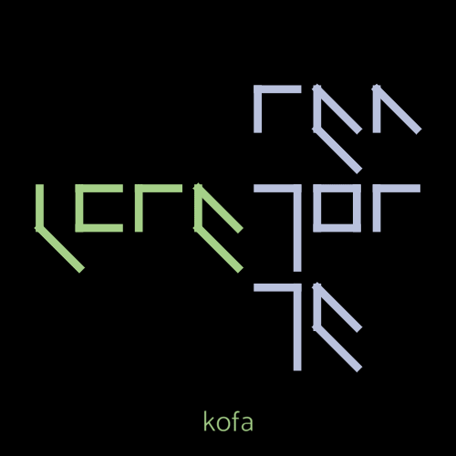
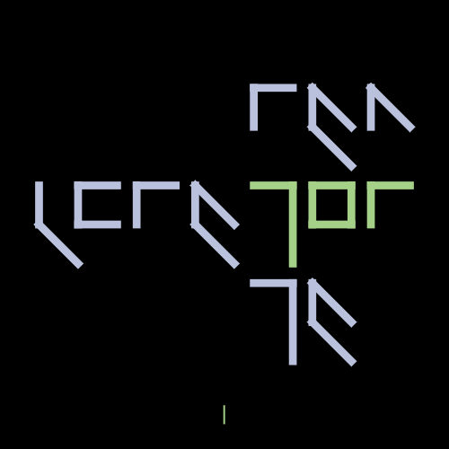
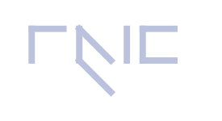
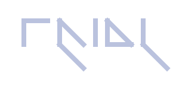
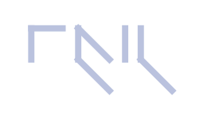
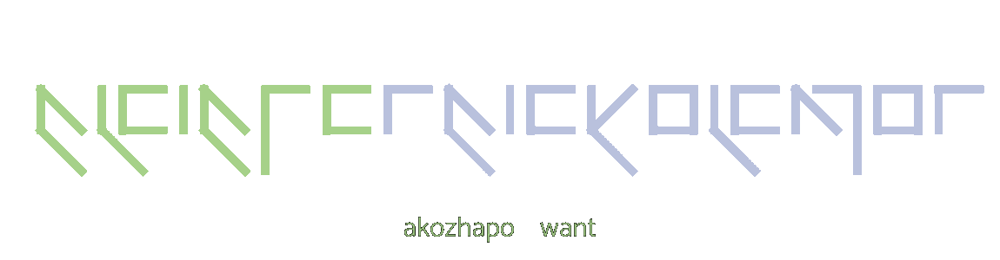
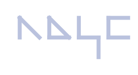
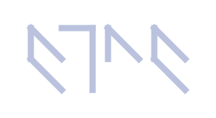
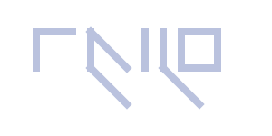
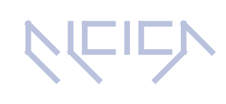

Stacking is an important part of speaking Ictuk.
Stacking seperates words into groups, where each group is pronounced left to right,
and each word in the group is pronounced top to bottom.
Below are 2 examples of the phrase "I am good too".
Order in Ictuk

Order in English

Half height glyphs are special in that they both can be placed next to the upper or lower half of a full-height glyph,
and because they can be stacked on top of each other relative to the word they are apart of.
Both are stylistic choices that are up to the writer.
Grammar
Verbs
Verbs are synthesized in a particular way, as seen in this table.
Aspect
Negation
Tense
Root
Subject
Modal
Aspect Aspect is how a verb extends through time.
There are 4 aspects: simple, progressive, perfect, and perfect progressive.
In Ictuk, 3 of these 4 aspects have a preposition that represents them.
Simple is just the action, like "sleep", and has no preposition.
Progressive is a continuous action, like "sleeping",
and is represented with "fazho", for "over".

Perfect is the relation between an earlier action and a later time,
like "has slept", and is represented with "zhoughk", for "at".
Perfect progressive is like perfect, but as an ongoing action,
like "has been sleeping", and is represented with "fazhoughk", for "go".

If there a visible aspect (i.e. not Simple) but no visible tense (i.e. Present),
the aspect falls where the tense would be.
Tense Tense is when a verb happened. There are 3 tenses: present, past, and future.
Present tense is a verb that is actively happening,
like "sleeps", and has no additional word to represent it.
Past tense is a verb that has already happened, like "slept",
and is represented with "kazhf".
Future tense is a verb that will happen,
like "will sleep", and is represented with "fazhk"

Negation Negation is when a verb isn't being done,
like "not sleeping", and is represented with "o".
Root The root is the action itself.
Unlike English, there are no infinitives in Ictuk (e.g. "to sleep").
The auxilliary gets formatted in simple aspect and added to the front of the phrase,
and the root gets formatted as progressive aspect.
For example, "I want to sleep" becomes "I want sleeping".

Modal Modality is what conveys the mood of a sentence.
There are 4 types in Ictuk: possibility/potential, ability,
hypothetical, and obligation.
Possibility/potential, or "could/would" is "shoughho", for "with"

Ability, or "be able to", is "atsha", for "through"

Hypothetical, or "were to", is "fazhku", for "toward"

Obligation, or "should", is "akozho*", for "require"

Commands are formatted using the obligation modal (e.g. "Go!" becomes "You should go!") Subject The subject is the actor of the verb, and is always a pronoun.
When regular nouns are being used (e.g. "My computer is very good"),
the noun stays seperate from the verb,
but the subject word changes according to the noun.